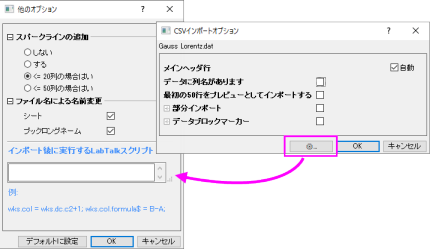
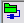
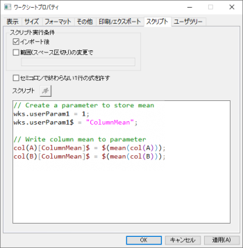

FAQ-428 インポート後にLabTalkスクリプトを実行するには?
run-script-after-import
最終更新日：2024/10/15
インポート後にLabTalkスクリプトを実行してデータの後処理（計算、書式設定、分析、作図）を行うためのオプションがいくつかあります。
- 他のオプションボタン
 は、CSVコネクタやExcelコネクタといったデータコネクタに組み込まれており、LabTalkコマンドを使ってインポート後の処理を設定できます。このスクリプトは、アクティブなデータコネクタがファイルをインポートまたは再接続するたびに実行されます。LabTalkスクリプトは、他のオプションダイアログのテキストボックスに入力することができ、インポートが成功した直後に実行されます。
は、CSVコネクタやExcelコネクタといったデータコネクタに組み込まれており、LabTalkコマンドを使ってインポート後の処理を設定できます。このスクリプトは、アクティブなデータコネクタがファイルをインポートまたは再接続するたびに実行されます。LabTalkスクリプトは、他のオプションダイアログのテキストボックスに入力することができ、インポートが成功した直後に実行されます。
Note: インポート後のスクリプトを実行しても、ソースデータへの接続は切断されません。 |

- ほとんどのデータコネクタでは、最初のインポート後に「インポート後に実行するLabTalkスクリプト」ボックスにアクセスできます。

アイコンをクリックして、「インポート後に実行するスクリプト」を選択します。デフォルトでは、OKをクリックするとインポートがトリガーされ、その後スクリプトが実行されます。
- 一部のデータコネクタでは、インポート後のスクリプトボックスが提供されていないませんが、LabTalkスクリプトをワークシートに直接埋め込むこともできます。ワークシートプロパティダイアログのスクリプトタブに入力したLabTalkスクリプトは、インポート後に実行するように設定可能です
(この方法はインポートされたデータで動作します)。これは、スクリプトをテンプレート(.otwu)、ワークブック(.ogwu)、プロジェクトファイル(.opju)に保存できるため、データの持ち運びの際に安心です。詳しくはOriginLabのブログ記事を参照してください。

- 以前のXファンクションベースのインポートルーチン (例えばimpASCなど)
を使用している場合、LabTalkスクリプトをASCII、CSV、SPC、Excelファイルのデータ:ファイルからインポートダイアログに追加し、ダイアログテーマとして設定を保存することができます。
- ほとんどのファイルタイプで、iwfilterダイアログボックスを使用して、ドラッグアンドドロップインポート用のフィルタにスクリプトを追加できます。Excelファイルのインポートを使用する例として、環境設定:インポートフィルターマネージャー...
をクリックし、フィルタマネージャダイアログのフィルタ列でExcelを選択します。ドラッグアンドドロップのサポートチェックボックスが選択されていることを確認します。
編集をクリックしてImport and Export: iwfilterダイアログを開き、一般のインポート設定のインポート後のスクリプトボックスにLabTalkスクリプトを入力します。名前を付けて保存をクリックし、フィルタ（.oifファイル）を<
Origin User File フォルダ>\Filtersフォルダに保存します。ExcelファイルをOriginにドラッグアンドドロップすると、Select
Filterダイアログが表示され、フィルタを選択できます。保存したフィルタを選択し、OKをクリックします。"インポート後のスクリプト..."ボックス内のLabTalkスクリプトはインポート時に自動的に実行されます
(下記のNote1参照) 。この方法によって追加されたインポートフィルタは、ファイル：開くダイアログを介してインポートするとき、またはインポート操作のバッチ処理中にも使用できます（バッチ処理ダイアログ自体にスクリプトオプションがあることに注意）。
- インポートフィルタを保存してインポートウィザードでインポート後のスクリプトを追加することもできます。このオプションは、ASCIIファイルをインポートする場合、特に複雑な構造を持つファイル、バイナリやその他のユーザ定義データ型をインポートする場合に向いています。
Note1: この操作はFamos、MDF、pClampファイル形式には適用されません。
Note2: データのインポート時に、Iwfilterダイアログボックスの一般のインポート設定セクションの下にある
XFダイアログを開くにチェックを入れ、対応するインポートダイアログボックスを開くことができます。
インポート後に実行するスクリプトのサンプル
// 列幅を指定
wks.col1.width = 5;
wks.col2.width = 20;
wks.col3.width = 8;
// X、Y、Yエラー属性設定
wks.col1.type = 5; // データラベルを含むcol(A)の属性を設定
wks.col2.type = 4; // Xデータを含むcol(B)の属性を設定
wks.col3.type = 1; // Col(C)をYデータとして設定
wks.col4.type = 3; // Col(D)をYErrデータとして設定
// 現在の日付でワークブックを命名
string theDate = date2str($(today()), "MM-dd-yyyy")$;
page.longname$ = theDate$;
// 列平均を計算してメタデータ領域に記録するための 2 つのアプローチ
// Method 1
wks.userParam1 = 1; // 可視性を1 に設定 (0 = 不可視)
wks.userParam1$ = "ColumnMean";
col(A)[ColumnMean]$ = $(mean(col(A)));
col(B)[ColumnMean]$ = $(mean(col(B)));
//Method 2
wks.userparam(++Mean);
loop(ii,1,wks.ncols) { wcol(ii)[Mean]$="=Mean(this)"; } // 全列ループ}
キーワード:LabTalkスクリプト,
後処理, インポートデータ, インポートフィルタ, iwfilter, ワークシートスクリプト, ワークシートプロパティ, バッチ処理, インポート後